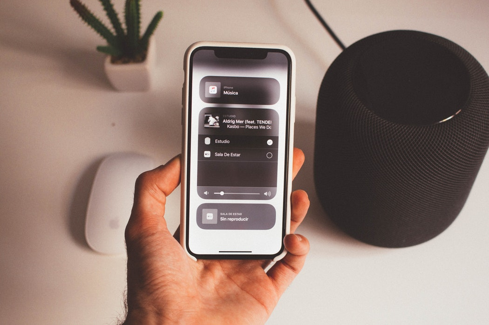
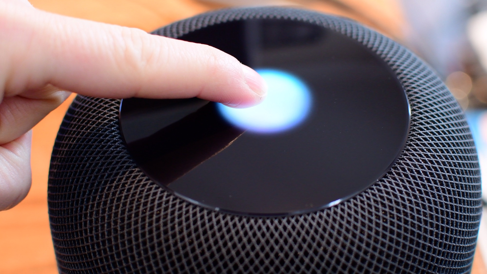
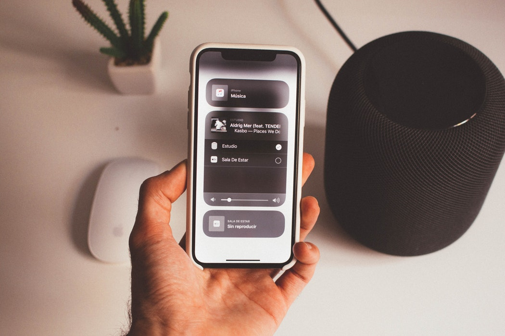
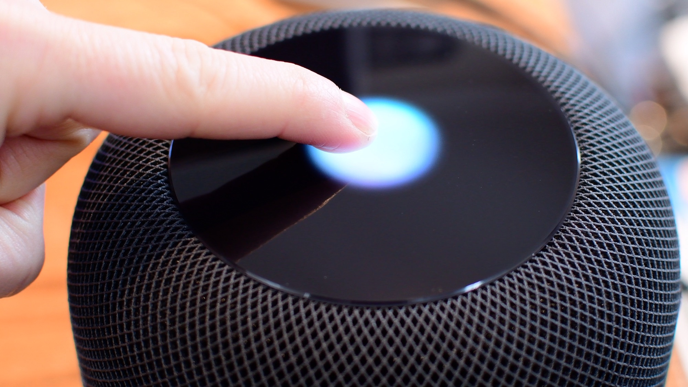

L'HomePod à votre service
L'HomePod est une enceinte intelligente et avec un son d'une qualitée execeptionnelle. Effectivement grâce à la puce A8 le HomePod est capable de s'adapter à son environnement, la puce A8 reglera la douzaine de haut-parleurs dont dispose l'enceinte, en fonction d'ou elle se trouve dans la pièce pour restituer au mieux le son. De plus le HomePod dispose de Siri qui sera capable d'effectuer différentes tâches, tels que vous donner la météo, envoyer un message à l'un de vos proches, regler un minuteur pour vous...

Dimensions
172 mm de hauteur
142 mm de diamètre
Poids
2,5 kg


Technologie Audio
Spécialement conçu pour le HomePod, un ensemble de sept tweeters à faisceaux acoustiques, chacun ayant son propre amplificateur, crée un contrôle directionnel exceptionnel. Dotés d’un design à pavillon replié et placés autour de la base, ils envoient le flux musical vers le centre, puis depuis le bas selon un schéma à 360°, ce qui se traduit par une sensation de l’espace très enveloppante. Cela élimine pratiquement toute réflexion sur des surfaces planes et permet d’offrir un son haute définition parfaitement cohérent.
De plus le boomer longue portée conçu par Apple est placé au sommet de l’enceinte, orienté vers le haut, ce qui crée une large gamme de basses profondes qui surpasse celle de n’importe quelle enceinte traditionnelle. Un ensemble de six micros, associé à un micro interne avec égaliseur de basses, analyse et compense l’effet de la pièce sur la réponse dans les graves, afin de produire un son riche et régulier.